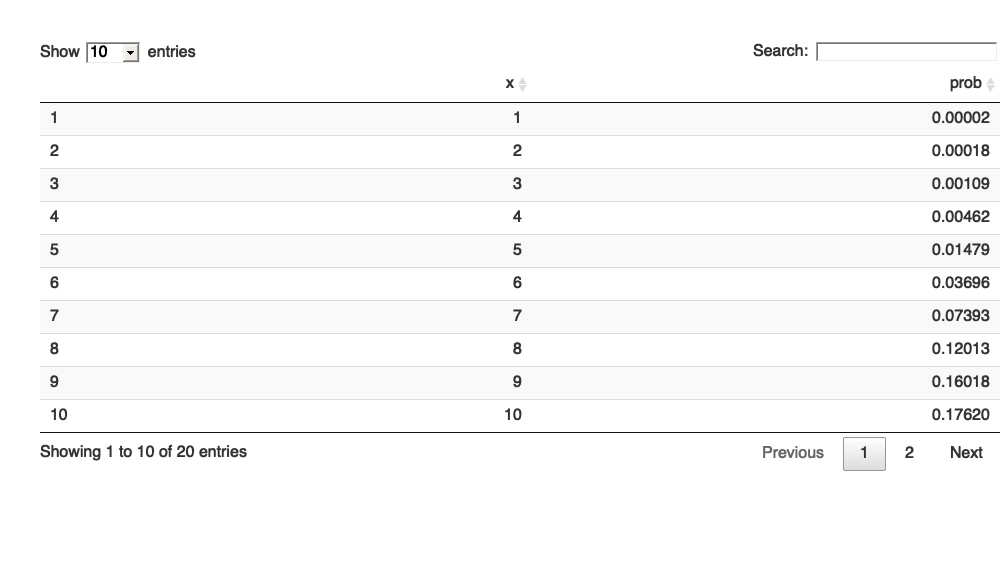

데이터 과학 – 기초 통계
이항분포
1. 베르누이 분포 1 2
베르누이 시행은 일반적으로 “성공”, “실패”처럼 두가지 중 하나의 결과만 갖는다. 따라서 추정해야 되는 모수는 성공 확률 \(p\), 반대로 실패는 \(1-p\)로 정의된다.
- 동전을 던졌을 때 동전 앞면이 나왔을 때 성공이라고 하면 “앞면”=“성공”=1, “뒷면”=“실패”=0 으로 표현할 수 있다.
- 일정거리를 두고 특수 제작된 총으로 사격훈련을 할 때 표적에 총격을 가할 때, “명중”=“성공”=1, “빗나감”=“실패”=0 으로 표현할 수 있다.
1.1. 베르누이 분포를 수식으로 표현
확률질량함수와 분포함수, 그리고 평균과 분산은 다음과 같이 수식으로 표현할 수 있다.
- 확률질량함수(Probability Mass Function) \[f(x) = dbinom(x,1,p) = \begin{cases} p & \text{if } x = 1 \\ 1-p & \text{if } x = 0 \\ 0 & \text{상기 경우 외} \end{cases}\]
- 분포함수(Distribution Function) \[f(x) = pbinom(x,1,p) = \begin{cases} 0 & \text{if } x < 0 \\ 1-p & \text{if } 0 \leq x < 1 \\ 1 & \text{if } 1 \leq x \end{cases}\]
- 평균: \(E(x) = p\)
- 분산: \(Var(x) = p \times (1-p)\)
1.2. 프로그램 R 코드로 표현
베르누이 확률분포를 적용가능한 상황을 살펴봤고, 수식으로 표현했다면 R 코드로 구현해 본다. R에서 기본함수로 내장되어 있어 별도 프로그램 구현은 생략하고 사용법만 확인해보자
- dbinom(x, size, prob): 밀도함수
- pbinom(x, size, prob): 누적 분포함수
- qbinom(p, size, prob): 분위수 함수
- rbinom(n, size, prob): 난수 생성
네가지 함수에 입력값으로 들어가는 매개변수는 다음과 같다. - \(x\): 벡터 - \(size\): 시행횟수 - \(prob\): 확률 - \(p\): 확률벡터 - \(n\): 관측점 갯수
베르누이 확률분포는 이항분포의 특수한 경우로 rbinom 함수를 통해 계산할 수 있다. rbinom(1,1,0.5)는 동전던지는 경우를 표현한 것으로 앞면이 나올 확률을 0.5로 지정하고 성공은 1, 실패는 0으로 각기 정의해서 하나를 뽑아본다. 매번 rbinom(1, 1, 0.5) 코드를 돌리기 번거럽기 때문에 replicate 함수를 통해 반복적으로 뽑아내거나, 10을 벡터값으로 전달하여 10개 난수를 뽑아낸다.
# 1. 베르누이 분포 -------------------
rbinom(1, 1, 0.5)[1] 1
replicate(10, rbinom(1, 1, 0.5)) [1] 0 1 0 1 1 0 1 1 0 0
rbinom(10, 1, 0.5) [1] 1 0 1 1 0 1 0 0 1 0
1, 0 이 컴퓨터가 인식하기 좋은 숫자라 사람이 이해가능한 방식으로 코드를 작성하면 다음과 같다.
## 1.1. 동전 던지기
rbinom(100, 1, 0.5) [1] 1 0 0 1 1 0 0 0 1 1 1 0 1 1 1 1 0 0 1 0 1 1 0 1 0 1 1 1 1 1 1 1 0 1 0 1 1
[38] 1 0 0 1 0 0 0 0 1 0 0 0 1 0 0 0 1 0 1 0 0 1 0 1 1 0 1 0 1 0 0 0 1 0 0 0 1
[75] 1 0 0 0 1 0 0 1 0 0 1 1 1 0 1 1 0 0 0 0 0 1 0 1 0 1
(coin_toss <- sample(c("앞면", "뒷면"), 100, replace=TRUE, prob=c(0.5, 0.5))) [1] "앞면" "뒷면" "뒷면" "앞면" "뒷면" "뒷면" "앞면" "뒷면" "앞면" "뒷면"
[11] "앞면" "앞면" "뒷면" "앞면" "뒷면" "앞면" "뒷면" "앞면" "앞면" "뒷면"
[21] "뒷면" "앞면" "뒷면" "앞면" "뒷면" "앞면" "뒷면" "앞면" "뒷면" "뒷면"
[31] "앞면" "뒷면" "뒷면" "앞면" "앞면" "뒷면" "뒷면" "앞면" "뒷면" "뒷면"
[41] "앞면" "뒷면" "뒷면" "뒷면" "뒷면" "뒷면" "앞면" "앞면" "뒷면" "앞면"
[51] "앞면" "앞면" "앞면" "뒷면" "뒷면" "앞면" "뒷면" "뒷면" "앞면" "뒷면"
[61] "뒷면" "뒷면" "뒷면" "앞면" "앞면" "뒷면" "앞면" "앞면" "뒷면" "앞면"
[71] "앞면" "뒷면" "앞면" "앞면" "앞면" "앞면" "뒷면" "뒷면" "뒷면" "앞면"
[81] "앞면" "뒷면" "뒷면" "뒷면" "앞면" "뒷면" "뒷면" "앞면" "앞면" "앞면"
[91] "앞면" "앞면" "뒷면" "앞면" "뒷면" "앞면" "뒷면" "뒷면" "뒷면" "앞면"
table(coin_toss)coin_toss
뒷면 앞면
52 48
예를 들어 KBO 한국시리즈에 한시즌 100번 타석에 들어선 선수가 있는데 타율이 3할이라고 하자. 이 선수는 100번 들어서면 30번 안타를 치고 70번 범타로 물러난다. 평균과 분산은 R에서 TRUE는 1, FALSE는 0으로 처리하는 방식을 활용하여 쉽게 계산할 수 있다.
## 1.2. 타자
rbinom(100, 1, 0.3) [1] 0 0 0 1 0 0 0 0 1 0 1 0 0 0 0 0 1 1 0 0 0 1 1 0 0 0 1 1 1 1 0 0 0 1 1 0 0
[38] 0 0 0 1 0 0 1 0 1 0 0 1 1 0 0 0 0 1 0 1 1 0 0 1 1 0 0 0 0 1 1 0 0 0 0 0 0
[75] 0 1 0 0 0 0 0 0 0 0 1 1 0 0 1 1 0 0 0 0 0 1 0 0 0 0
hitter <- sample(c("안타", "범타"), 100000, replace=TRUE, prob=c(0.3, 0.7))
mean(hitter=="안타")[1] 0.30265
var(hitter=="안타")[1] 0.2110551
2. 이항분포 3
베르누이 시행을 반복한 것을 이항분포로 간주할 수 있다. 동전을 10번 던져 앞면이 1번 나올 확률을 계산해본다. dbinom() 함수를 사용해서 확률을 계산할 수도 있지만, rbinom() 함수로 난수를 뽑아내서 1이 나온 경우를 평균내면 확률을 계산할 수 있다.
dbinom(1, 10, 0.5)[1] 0.009765625
mean(rbinom(100000, 10, 0.5) == 1)[1] 0.00964
2.1. 이항분포 수식
이항분포는 \(n\)번 시행하여 성공확률 \(p\)를 갖고 \(k\)번 성공할 경우 다음과 같이 표현할 수 있다. \(\binom n k =\frac{n!}{k!(n-k)!}\)은 이항계수로 수식으로 간략히 표현하면 다음과 같다.
\[Pr(k;n,p) = \Pr(X = k) = {n\choose k}p^k(1-p)^{n-k}\] 이항분포 평균과 분산은 다음과 같이 계산된다.
- 평균: \(\mu = np\)
- 분산: \(\sigma^2 = np(1-p)\)
2.2. 이항분포 R 코드
공정한 동전으로 앞면이 나올 확률이 50%인 동전을 25번 던져 앞면이 평균적으로 얼마나 나올 것인가? 수식으로 표현하면 \(\mu = np\)가 되어, \(25 \times 0.5 = 12.5\)가 되는데 이를 확률 50% 동전을 100,000 번 던지는 난수를 뽑아 계산하면 근사적으로 유사하게 나온다. 분산도 수식으로 표현하면 \(\sigma^2 = np(1-p)\)이 되고, 수치적으로 계산하면 \(25 \times 0.5 \times (1-0.5) = 6.25\)가 된다. 물론 난수를 뽑아 계산해도 이론값에 근사하게 나타난다.
# 2. 평균과 분산
25 * 0.5[1] 12.5
25 * 0.5 * (1 - 0.5)[1] 6.25
mean(rbinom(100000, 25, 0.5))[1] 12.50875
var(rbinom(100000, 25, 0.5))[1] 6.201382
2.3. 이항분포 시각화
공정한 동전을 던져 10번 이상 앞면이 나올 확률은 어떻게 될까? 이론적으로 pbinom() 함수를 사용해서 누적확률을 계산하면 된다. 하지만 10이상 앞면이 나와야 하니 전체 확률에서 10번보다 적게 나온 누적확률을 빼야한다.
df <- data.frame(x=1:20, prob=dbinom(1:20, 20, prob=0.5))
DT::datatable(df) %>%
DT::formatRound(c("prob"), digits=5)
ggplot(data=df, aes(x=x, y=prob)) +
geom_line(size=1) +
geom_ribbon(data=subset(df, x > 10),
aes(ymax=prob),ymin=0,
fill="red", colour = NA, alpha = 0.5) +
theme_bw(base_family = "NanumGothic") +
labs(x="동전이 앞면 나오는 횟수", y="확률", title="동전 앞면이 10회 이상 출현할 확률")
1 - pbinom(10, 20, 0.5)[1] 0.4119015
mean(rbinom(100000, 20, 0.5) > 10)[1] 0.41293
df %>% filter(x>10) %>%
summarise(over_10 = sum(prob)) over_10
1 0.4119015